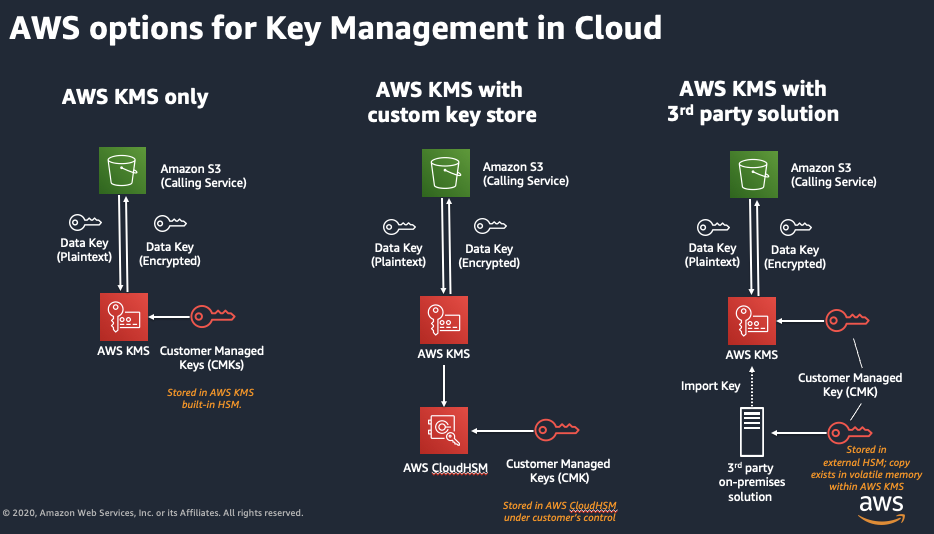
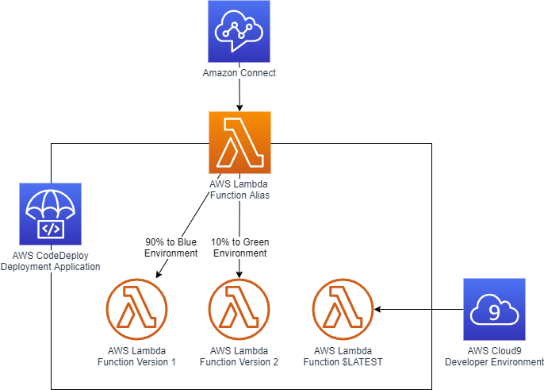
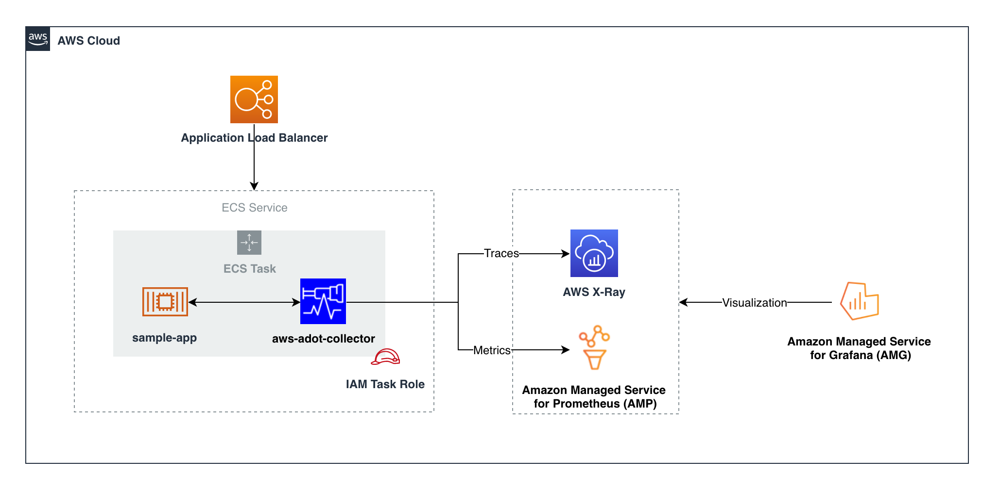

Cheikh Ahmadou Tidiani Top
Software Engineer & Developer Lead
About me
Passionate about leveraging technology to solve complex challenges, As a skilled software engineer with a focus on backend development, I take great pride in adhering to SOLID principles and utilizing design patterns to create well-crafted solutions. My keen analytical skills and experience with design thinking and problem-solving allow me to consistently deliver high-quality results. In addition, my ability to quickly pick up new technologies and my enthusiasm for collaborating on complex challenges make me a versatile and effective team player.
Case Study: Amazon Connect Contact Center Migration
-
Project Overview & Description
Project Overview:
The Amazon Connect Contact Center Migration project was initiated to modernize and enhance an existing contact center solution by transitioning it to Amazon Connect, a cloud-based contact center service provided by AWS. The primary goals were to improve scalability, elevate customer experience, and take full advantage of the advanced features offered by Amazon Connect.

Legacy to Amazon Connect

Smart interactive voice response(IVR)
Project Description:
Our objective was to migrate a legacy on-premises contact center system to Amazon Connect. This migration required the integration of various functionalities such as Interactive Voice Response (IVR), intelligent call routing, callback requests, sentiment analysis, and real-time analytics. Additionally, we incorporated AWS services to enhance the system's performance, reliability, and scalability.
The project involved extensive planning, from evaluating the existing infrastructure to designing a robust architecture that could support the advanced features of Amazon Connect. We customized IVR flows using Amazon Connect Contact Flows, implemented intelligent call routing based on real-time data, and enabled omnichannel support for voice, chat, and email through Amazon Connect. Real-time analytics were integrated using Amazon QuickSight to provide comprehensive reporting and insights.
-
Security & Monitoring
Security Aspects:
Security was a key focus in this migration, given the sensitive nature of customer interactions and data. We implemented robust security measures, including data encryption both in transit and at rest using AWS Key Management Service (KMS). Access control was managed through AWS Identity and Access Management (IAM), ensuring that only authorized personnel could access specific resources. Compliance with industry standards such as PCI-DSS and GDPR was strictly enforced through regular audits and security reviews.
Key features of AWS KMS

VPC with servers in private subnets
In addition to these measures, we implemented network isolation using Amazon Virtual Private Cloud (VPC) and used AWS Shield and AWS WAF to protect against potential threats. The migration also involved setting up comprehensive monitoring and auditing tools to ensure that security protocols were followed rigorously.
Monitoring and DevOps Strategy:
To maintain high availability and performance, we utilized Amazon CloudWatch for real-time monitoring, AWS X-Ray for debugging, and AWS CloudTrail for logging and auditing purposes. This setup allowed for continuous oversight of the system's health, performance, and security.
Our DevOps strategy involved setting up a CI/CD pipeline using AWS CodePipeline, CodeBuild, and CodeDeploy. This pipeline facilitated continuous integration and deployment, ensuring that updates and new features could be rolled out with minimal downtime. In the production environment, we emphasized zero-downtime deployments and automated scaling to handle fluctuating demand. Regular performance reviews and automated testing, using AWS Device Farm, were conducted to ensure the system's reliability and efficiency.
-
Challenges & Solutions
Challenges Faced:
During the migration to Amazon Connect, we encountered several challenges that required innovative solutions. One of the main challenges was ensuring system compatibility and seamless integration between the existing systems and Amazon Connect, particularly for custom integrations with third-party applications. This required a thorough assessment of the current systems, followed by phased integration testing. We used AWS Lambda and Amazon API Gateway to achieve smooth integration.
AWS Lamda Function Alias from Amazon Connect
Monitoring Setup
Another significant challenge was the secure migration of large volumes of historical call data and customer information to the cloud. To address this, we employed AWS Data Migration Service (DMS) for efficient data transfer and ensured data encryption both in transit and at rest using AWS KMS. Additionally, regular backups and multi-region replication were implemented to ensure data durability and disaster recovery capabilities.
Scalability and performance were also critical concerns. The new contact center needed to handle peak loads and scale dynamically based on demand. We leveraged Amazon Connect's auto-scaling capabilities and integrated with Amazon CloudWatch for real-time monitoring and alerting. Load testing was performed to validate the system's performance under various scenarios, ensuring it could meet the high demands of a global customer base.
User training and adoption posed another challenge, as the staff needed to become familiar with the new system. We developed comprehensive training materials, including detailed documentation and hands-on workshops, to facilitate a smooth transition. Continuous support was provided during the adoption phase to address any issues that arose.
Finally, maintaining high levels of security and ensuring compliance with industry standards was paramount. We deployed IAM policies for fine-grained access control, utilized Amazon VPC for network isolation, and adhered to encryption standards to protect data. Compliance with relevant standards such as PCI-DSS and GDPR was ensured through regular audits and security reviews.
Solutions Provided:
We overcame the challenges through advanced integration techniques, secure data migration, scalability enhancements, robust training programs, and stringent security measures. By utilizing AWS Lambda, Amazon API Gateway, Amazon SQS, and other AWS services, we successfully integrated Amazon Connect with existing CRM and ticketing systems. Data was securely migrated using AWS DMS and KMS, with regular backups and multi-region replication for added data protection.
Scalability was achieved through auto-scaling for Amazon Connect and related services, while continuous performance monitoring was facilitated by Amazon CloudWatch and AWS X-Ray. The training programs ensured that the staff was well-equipped to handle the new system, and robust security measures, including IAM policies and network isolation, provided the necessary protection for sensitive data.

Challenges Faced

Solutions Provided
Baye Sabarane LAM, Cloud Solution Architect, Technical Lead